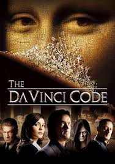

Get ready for puzzles, secret societies, and the realization that maybe you should’ve paid more attention in history class. 🏛️
Professor Robert Langdon + A Cryptologist + A Murder in the Louvre = A wild adventure that questions everything you thought you knew about history. 🧐💡
✔️ It's basically a *National Treasure* movie but with way more history and Latin. 🏰
✔️ You'll feel like a genius every time you understand a clue. 🧠✨
✔️ You can impress people at parties by randomly mentioning Fibonacci numbers. 🔢
(You’ll never look at paintings the same way again.)
"Men go to far greater lengths to avoid what they fear than to obtain what they desire."
"The human mind has a primitive ego defense mechanism that negates all realities that produce too much stress for the brain to handle."
"Everyone loves a conspiracy."